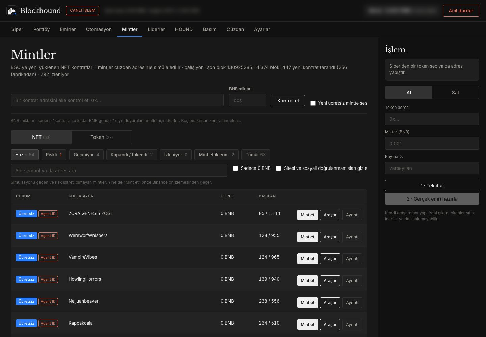

BNB Chain · açık kaynak mint ajanı
Yeni mintleri ilk bloktan koklar.
Blockhound zincirdeki her yeni kontratı tarar, mint fonksiyonlarını cüzdanınla simüle eder, riskli olanları eler ve ücretsiz olanları senin kurallarınla mintler. Piyasası açılan tokeni de ilk dakikada haber verir.
Nasıl çalışır
-
01
Kokla
Her yeni bloktaki kontrat kurulumlarını ve fabrika kontratlarının içinden doğanları yakalar. Proxy arkasındakileri ve Agent ID şartlı mintleri de tanır.
-
02
Simüle et
Mint fonksiyonlarını cüzdan adresinle, gerçek işlem göndermeden dener. Ücretsiz mi, ücreti ne, tükenmiş mi, sana hak var mı: hepsini zincirden okur.
-
03
Süz
İşlem, token ve site güvenlik taramaları, taklit marka adları ve son kapı olarak cüzdan önizlemesi: izin isteyen, varlık getirmeyen ya da tuzak olan her şey elenir.
-
04
Mintle ve haber ver
Kurallarını geçen ücretsiz mintleri günlük sınırın içinde otomatik gönderir, pahalı olanları sana sorar. Elindeki bir tokenin havuzu açılınca bildirim gelir.
Terminal turu
İçeriden bir bakış
Görüntüler gerçek terminalden, canlı zincir verisiyle alındı. Terminal Türkçe ve İngilizce kullanılabilir. Cüzdan bakiyesi ve adresi bulanıklaştırıldı; kişisel portföy gösterilmiyor.

Mintler
Her yeni bloktaki kontratlar taranır, mint fonksiyonları cüzdanınla simüle edilir. Hazır, riskli, geçmiyor ve tükendi diye ayrılır; NFT ve token mintleri ayrı sekmelerdedir. Agent ID şartlı olanlar rozetle işaretlenir.
Güvenlik önce
Kendi bilgisayarında
Blockhound senin bilgisayarında çalışır. Anahtarlar ve cüzdan oturumu dışarı çıkmaz. Bu site hiçbir cüzdana bağlanmaz, HOUND mint sayfası da dahil.
Sert limitler
İşlem başı ve günlük BNB tavanı, günlük otomatik mint sınırı ve tek tuşla acil durdurma. Limiti yükseltmek ayrı onay ister.
İzin yok, sürpriz yok
Token harcama izni, yetki değişikliği ya da cüzdandan beklenmeyen bir çıkış gösteren işlem hiç gönderilmez. Cüzdana bir şey getirmeyen çağrı da durdurulur.
Ücretsiz süzgeç
Karar, ücretli yapay zekâya gerek kalmadan zincir verisi ve ücretsiz güvenlik taramalarıyla verilir. İstersen yapay zekâ araştırması ayrıca açılabilir.
Rakamlar
Rakamlar henüz yayınlanmadı.
- Takip edilen kontrat (14 gün)
- –
- Gönderilen mint
- –
- Otomatik mint
- –
- Riskli diye elenen
- –
- Mint başına ortalama gas
- –
Kendi bilgisayarına kur
Blockhound açık kaynaktır (MIT). İndir, kendi cüzdanınla çalıştır, istediğin gibi geliştir. Cüzdanın ve anahtarların senin bilgisayarında kalır.
- Node.js 20+ ve Binance Agentic Wallet CLI'ı kur
npm i -g @binance/agentic-wallet - Depoyu indir
git clone https://github.com/justbiar/blockhound.git - Bağımlılıkları kur ve ayar dosyasını oluştur
npm install && cp .env.example .env - Başlat ve tarayıcıda aç: 127.0.0.1:8787
npm start
Varsayılan mod simülasyondur: hiçbir işlem gönderilmez. Canlıya geçmeden önce limitleri düşük tut. Ayrıntılar README'de.
İş kanıtıyla mint
HOUND ve BlockHound
HOUND topluluk tokenı, BlockHound ise NFT koleksiyonu. Önceden basılmış tek bir adet yok: hash'i herkes arayabilir ama yalnızca Binance Agent ID sahibi cüzdanlar mintleyebilir. Arz sınırsız ama her dönemde zorluk iki katına çıkar, bir süre sonra mint pratikte imkânsızlaşır. 10.000 HOUND 0.50 dolar, bir BlockHound 0.10 dolar; ücretler projeye destek olarak kasaya gider.
HOUND bir yatırım ürünü değildir. Kâr, getiri, temettü ya da fiyat vaadi yoktur; değeri sıfır olabilir. Yalnızca kaybetmeyi göze aldığın kadarıyla destek ol.
Sık sorulanlar
Blockhound benim cüzdanıma erişir mi?
Tanıtım sayfaları hiçbir cüzdana bağlanmaz. Mint sayfası da cüzdana bağlanmaz: hash'i tarayıcında arar, gönderimi sen kendi ajan cüzdanından baw ile yaparsın. Blockhound uygulaması ise kurulduğu bilgisayarda, sahibinin kendi cüzdan oturumuyla ve onun koyduğu limitlerle çalışır.
Hangi zincirde çalışıyor?
BNB Chain (BSC). Hem NFT mintlerini hem de bir mint kontratı üzerinden dağıtılan token mintlerini tanır.
Mintlenen her şey para eder mi?
Hayır. Ücretsiz mintlerin çoğunun değeri sıfırdır. Token mintlerinde havuz genelde mint bitince kurulur, bazıları hiç kurulmaz. Blockhound fırsatı yakalamayı kolaylaştırır, kazanç garanti etmez.
HOUND bir yatırım mı?
Hayır. HOUND ve BlockHound projeye destek içindir; hiçbir getiri ya da fiyat vaadi taşımaz, değerleri sıfır olabilir.
Kendim kurabilir miyim?
Evet. Blockhound MIT lisanslı açık kaynaktır: GitHub'dan indirip kendi bilgisayarında kendi cüzdanınla çalıştırabilir, kodu inceleyip geliştirebilirsin.
Katkıda bulunabilir miyim?
Elbette. GitHub'da bir konu (issue) açarak başla; güvenlik açıklarını herkese açık konu yerine özel bildirimle ilet.